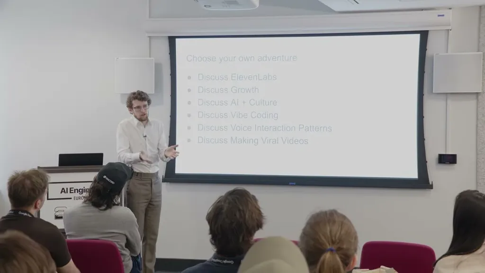
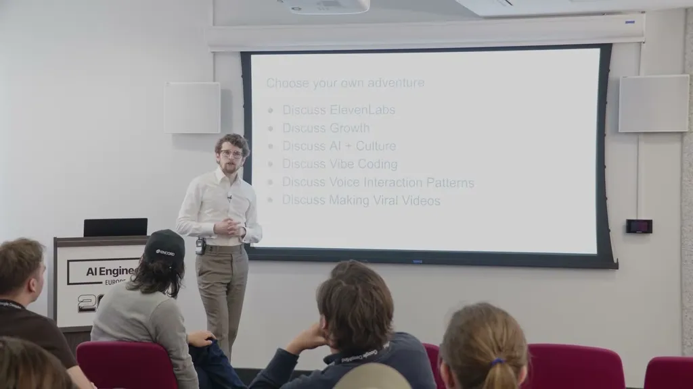
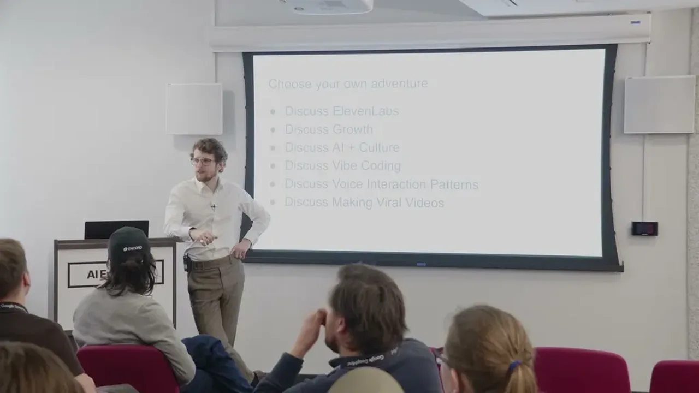
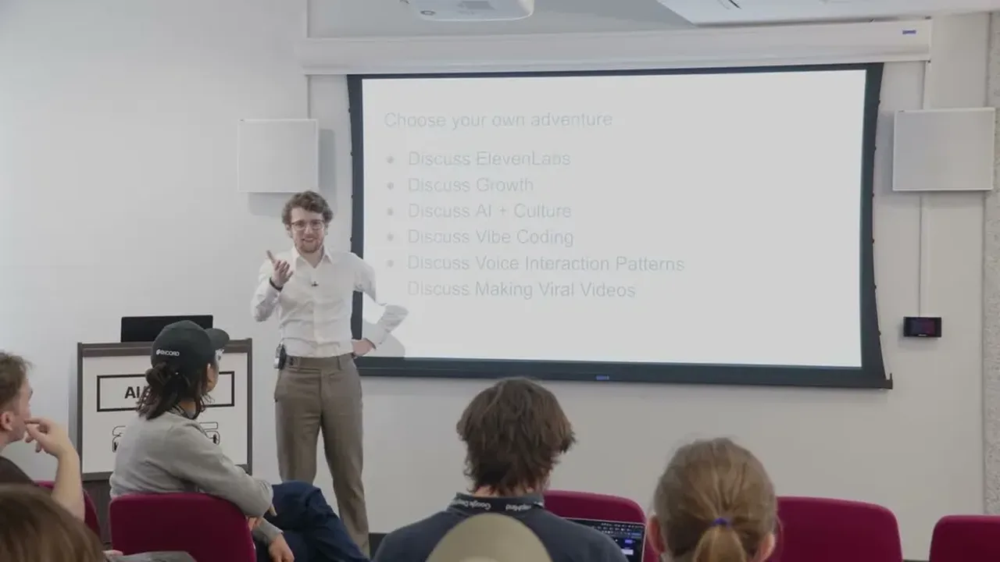
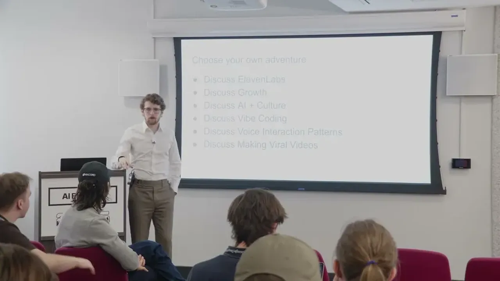

How to talk to statues
If you only read one thing
- The statue app was built in two hours by chaining existing APIs (OpenAI deep research, ElevenLabs voice design and agent platform) and went from 50,000 to 1.5 million impressions in two days (c1, c2).
- Museums reacted seriously -- one CEO said his team had spent a year on the same idea -- but the speaker says the hard remaining work is curatorial narrative design and production reliability, not the API glue (c3, c5).
- Live discussion surfaced unresolved voice-UX problems: users are too polite to interrupt agents, don't know how long a spoken response will be, and want dense text/visual output paired with fast voice input (c6, c7).
The app lets a user photograph a statue, which triggers an OpenAI deep-research call on the statue's identity, generates a voice via ElevenLabs' voice design API, spins up an ElevenLabs agent, and starts a phone call -- the whole pipeline runs in about 30 seconds. The prototype was built in two hours on a Sunday and, after being posted with the underlying prompt, grew from 50,000 impressions on day one to 1.5 million on day two.
“I built this in in two hours on a Sunday cuz I was I was sort of tired and bored.”
▶ watch at 03:10“It then went completely viral and went from 50,000 on the first day to 1.5 million on the second day.”
▶ watch at 04:10
Three museums and businesses including Bonhams and Christie's reached out; one museum CEO tracked down the speaker's WhatsApp number to say his team had spent a year on a similar idea. The speaker frames this less as a technical achievement and more as evidence that gluing together existing scalable APIs -- and telling a good story about that glue -- can outweigh solving hard technical problems.
“I've had a team of 10 people working on this for a year how did you build this?”
▶ watch at 03:40“pretty much all of like what I've done is stitched together existing APIs which are designed to scale.”
▶ watch at 05:45The speaker says the photo-plus-deep-research flow isn't a long-term answer for museums; the harder, longer-tail work is going to curators to design an actual narrative rather than pulling from generic search results, and building an editing interface for that content (most museums already expose their collection data via API).
“the take a photo and just get your research back is not really the long-term solution for the museums.”
▶ watch at 06:50
In discussion, the speaker and audience identify several unresolved voice-interaction problems: interactions are currently binary (voice or other, not blended with generative UI), users are too polite to interrupt voice agents even though doing so improves the experience, and there's no established interaction pattern for 'skim listening' the way visual skimming works when scanning text.
“you basically have a binary you're either interacting with voice or you're interacting in some other way.”
▶ watch at 10:25“people don't like interrupting uh voice agents cuz they're too polite people are too polite and I'm starting to learn to just like interrupt agents much more aggressively”
▶ watch at 11:30
The speaker describes a Facebook Instant Games API clone (a Fruit Ninja knockoff bought for 15 pounds, instrumented with social/leaderboard primitives) that reached 15 million users overnight via Facebook's low-cost test markets, and argues this social-primitive pattern is the closest template for what will make vibe-coded consumer apps go viral, alongside practical tactics like adding captions, front-loading a hook (his videos' median view time is 6-12 seconds), and adding music.
“vibe coding evening vibe coding events they feel like the OG hackathons because people show up and they have they've never even thought about writing code before”
▶ watch at 15:00“I bought this thing 15 pounds instrumented it with Facebook Instant Games API and went to bed the next day I woke up with 15 million users”
▶ watch at 18:10
Commentary (ours)
The gap between 'built in two hours' and 'museum wants to deploy this' is entirely in the parts that aren't voice AI -- narrative curation and editorial workflow -- which suggests vertical voice-agent pitches should budget for that curatorial layer up front rather than treating it as an afterthought (ours).











Underlying detail — every claim, typed and timestamped (9)
| Stance | Claim | t |
|---|---|---|
| asserts | The statue app prototype was built in two hours on a Sunday by chaining existing APIs. | 03:10 |
| asserts | The statue video went from 50,000 impressions to 1.5 million impressions in two days. | 04:10 |
| asserts | A museum CEO contacted the speaker directly saying his team had spent a year building something similar. | 03:40 |
| asserts | The app scales because it's stitched from existing APIs designed for production scale, not custom infrastructure. | 05:45 |
| warns | The automated photo-and-research flow isn't the long-term solution for museums; curator-designed narrative is the harder remaining problem. | 06:50 |
| asserts | Current voice interfaces are binary -- you're either interacting by voice or by another modality, without a blended pattern. | 10:25 |
| warns | Users are too polite to interrupt voice agents, even though interrupting more aggressively improves the experience. | 11:30 |
| asserts | Vibe-coding events resemble original hackathons because many attendees have never written code and are surprised people make apps. | 15:00 |
| asserts | A 15-pound Fruit Ninja clone instrumented with the Facebook Instant Games social API reached 15 million users overnight. | 18:10 |
Machine-readable copy embedded in this page (script#ontology) and in the corpus ontology.